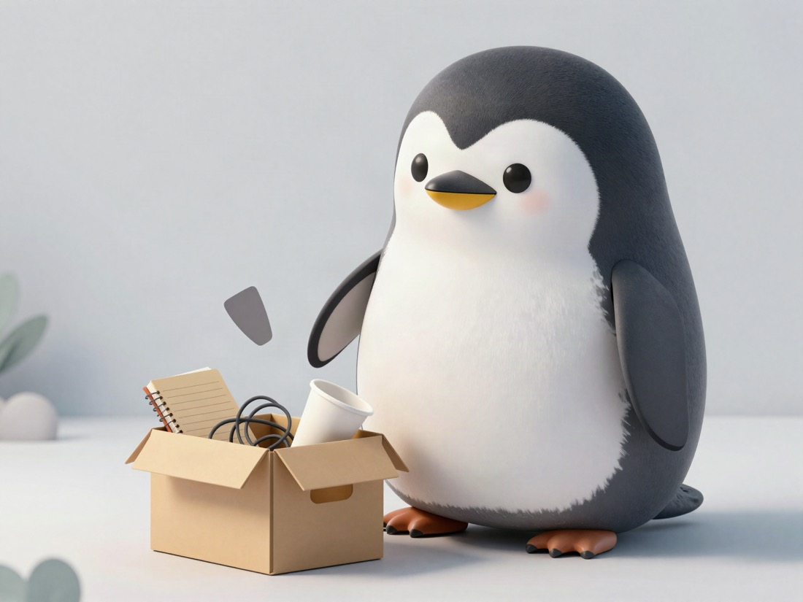

Choose 3 Things
to Leave Behind First

Next part.
This is the second thing I do to throw away perfectionism.
This was a blind spot for me, but it is good to decide what to throw away at the start.
Starting new things and adding things are exciting work for perfectionists.
But then it never ends.
Instead, decide three things to throw away first.
Three, if possible.
My blog also has perfectionism in its blood.
If I leave it alone, I will touch it forever.
So I decided these things first:
within 10 minutes
within 1 minute
what I think quickly
Because I decide what I will not do first, I can put it outside for now.
If I throw things away later, it becomes “compromise.”
But if I decide first, it becomes “design.”
I do the same thing, but it is treated differently inside me.
Choose first.
Then it is design.
Maybe perfectionism is not trying to do everything.
Maybe it is not being able to explain to myself what I gave up.
Just do it.
And choose three things to throw away first.
It is not exciting, but this works best for me now.